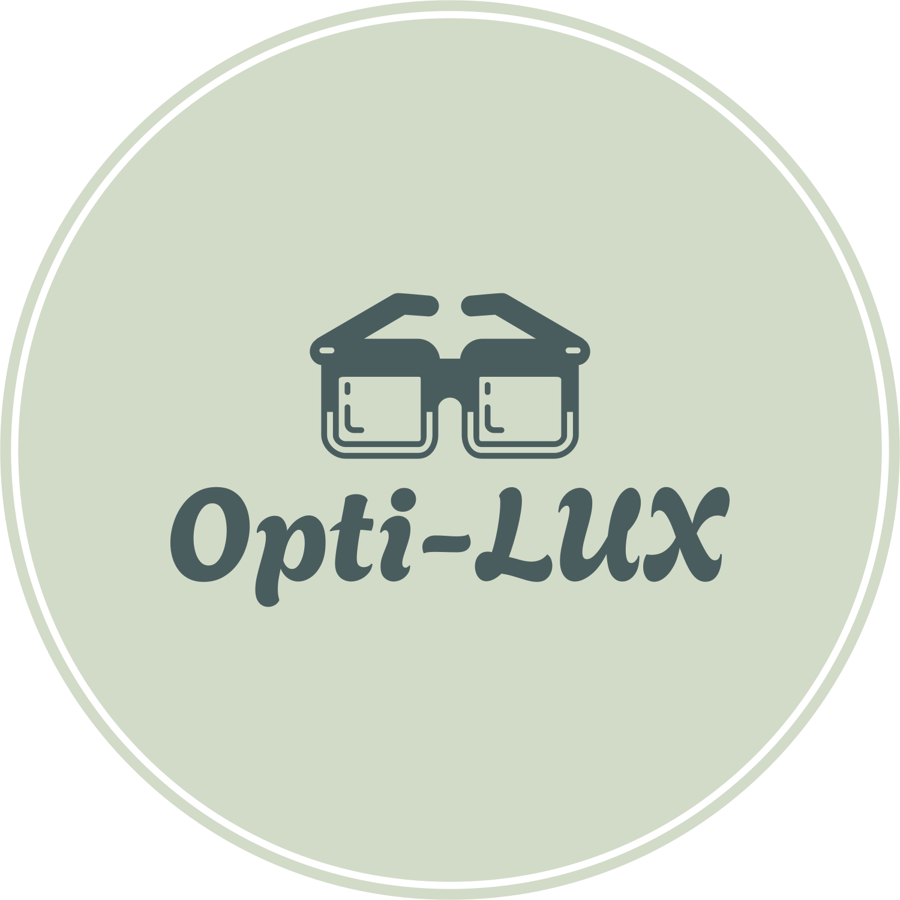

<nav class="navbar navbar-light" style="background-color: #94df91;">
    <div class="container-fluid">
      <h1 class="navbar-brand">
        
        Opti-Lux
      </h1>
  
      <!-- Boutons pour Liste des Lunettes et Ajouter des Lunettes -->
      <button routerLink="liste" class="btn btn-light text-white" style="background-color: #547553;">Liste des Lunettes</button>
      <button routerLink="ajouter" class="btn btn-light text-white" style="background-color: #547553;">Ajouter des Lunettes</button>
    </div>
  </nav>
  
